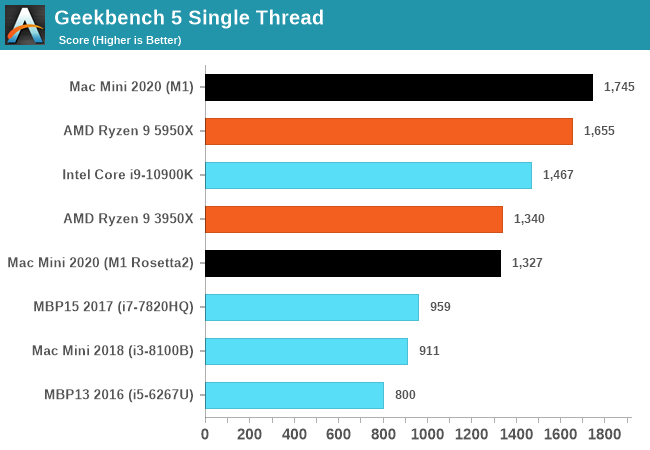

or follow me on Twitter [@singhkays](https://twitter.com/singhkays)](https://singhkays.com/blog/arm-cpu-faster-than-apple-m1/media/theres-a-storm-coming-intel-amd-arm-dark-knight.jpg)
The release of Apple M1 Silicon has laid to rest many questions about whether ARM CPUs can go toe-to-toe with the best of the bunch from Intel and AMD. The question now is not whether ARM chips can perform better than Intel/AMD but whether others can build similarly powerful ARM CPUs. Today, companies like Marvell, Ampere and AWS are shipping ARM CPUs that keep getting better with each generation and close to the level of performance of top-end X86 CPUs. It only feels like a matter of time before ARM CPUs will provide tough competition to the X86 CPUs from Intel and AMD. This feels a bit like standing on the Florida coast and watching the first bands of a hurricane arrive. This reminds me of the iconic scene in the movie “The Dark Knight Rises” when Selina Kyle (Catwoman) tells Bruce Wayne (Batman) that there’s a storm (Bane) coming. The full dialogue goes something like:
Selina Kyle (Catwoman): There’s a storm coming, Mr. Wayne. You and your friends better batten down the hatches, because when it hits, you’re all gonna wonder how you ever thought you could live so large and leave so little for the rest of us.
—The Dark Knight Rises (2012)
If you read between the lines, there are many parallels that you can draw from the characterization in the movie to real life.
-
Batman and Catwoman are frenemies, which is not much different from Intel and AMD’s relationship. They are often competitors, just like Batman & Catwoman. Still, they managed to work together once and ship this baby - Intel® Core i7-8809G - a rare Intel CPU with AMD integrated graphics.
-
Intel has dominated a large part of the CPU market’s profits for a very long time. In contrast, everyone else has had to contend with using lower cost as a vector to compete against Intel’s hegemony. For e.g. Intel dominates about 95.5% of the server chip market.
-
(SPOILER ALERT) Selina ends up joining up with Bane by giving up Batman. This might be very similar to the rumors that AMD is planning its own ARM CPUs in real life.
AMD has an M1 competitor in prototype stages, one version with integrated RAM, and one without it
— Mauri QHD (@MauriQHD) November 28, 2020
he said "almost ready"
but -imo- idk
leak is only a few days old, the chip idk
The King
Apple Silicon M1 has taken the CPU market by storm and, in doing so, answered every doubt whether it can compete with the best of the best. The M1 is currently sitting at the top of Geekbench’s single-core throne, all while using less power than competing CPUs. The M1 has completely reset the Performance per Watt expectations. It’s even more astonishing to think that as Apple has introduced the M1 for only the lowest-end Macs, this is the slowest SoC that Apple will ever make (for Macs). Based on Apple’s history of consistently delivering year-over-year performance improvements, the follow-ups to the M1 will likely improve upon the current single-core performance very rapidly. It is not clear whether Intel and AMD have something in the pipeline that could shift the balance back in X86’s favor.

From: https://www.anandtech.com/show/16252/mac-mini-apple-m1-tested/2
However, this could change soon.
A Challenger Emerges
Nuvia is a startup founded in early 2019 that is building an ARM CPU for the server market. The company was founded by John Bruno, Manu Gulati, and Gerard Williams III. They bring a breadth of experience in system engineering and silicon design for more than 20 chips and more than 100 patents. Nuvia’s leadership team holds an impressive resume with various architect and leadership roles at Google, Apple, ARM, Broadcom, and AMD (See here for the leadership team’s full details). It is quite possible that Nuvia’s leadership was involved with the previous Apple Silicon designs and bring with them the ideas and strategies that have made Apple’s chips a market-leader.
Here is more on Nuvia’s design goals and philosophy (emphasis on key talking points mine):
Our focus at NUVIA is to develop an SoC that will deliver industry-leading performance with the highest levels of efficiency, at the same time. To do this, we are creating a server CPU that is built in a new way, with a complete overhaul of the CPU pipeline. Our first-generation CPU, code-named “Phoenix” will be a custom core based on the ARM architecture and central to our “Orion” SoC.
With X86 solutions claiming most of the market, only a small percentage of niche customers are willing to accept a lower per-core performance, high core count product. Arguably the most successful ARM-based design today is Amazon’s Graviton. Graviton is a captive design, aimed solely for a limited portion of AWS that values cost over performance. While there will likely be additional growth in this area, the heart of the market clearly demands the highest single-thread performance at TDP and the highest all-core performance at TDP. This is the fastest way to improve Performance/TCO for the most demanding hyperscale customers.
While these new entrant’s products show improvements, they still fall short of disrupting their X86 incumbents. At NUVIA, we are taking a different approach, with a clean-sheet CPU design that will deliver an elegant balance of performance leadership and power efficiency that maximizes memory bandwidth and core utilization. Our solution does not need to add extraneous cores to try and make up for a single-threaded performance deficit. Also, there would be no need to employ marketing-inflated boost clocks that are not achievable in any real-world applications of server SoCs, due to running into TDP constraints. In real-world scenarios, server SoCs are designed to be heavily loaded to make the best use of the capitalized hardware and allocated power and cooling budgets. The optimal solution is one where a workload finishes in the shortest time possible while consuming the least possible power.
I’ve highlighted the key design goals, but the gist of it is that:
- Nuvia is likely working on a custom ARM design like Apple rather than reusing ARM’s reference architecture like some other ARM licensees.
- The goal is the highest single-thread performance possible without the use of boost or turbo clocks.
Testing Methodology
Nuvia recently published their findings on how their Phoenix CPU fares against the latest X86 and ARM CPUs. Here are the systems that were tested:
| Device | SoC | Process Technology | CPU Microarchitecture | Frequency |
|---|---|---|---|---|
| 2020 Apple 13" MacBook Pro | Intel Core i7 -1068NG7 | Intel 10nm | Sunny Cove | 2.3GHz Base 4.1GHz Boost |
| 2018 Apple 15" MacBook Pro | Intel Core i7 - 8750H | Intel 14nm | Skylake | 2.2GHz Base 4.1GHz Boost |
| 2020 Lenovo 14" Flex 5 | AMD Ryzen 7 - 4700U | TSMC 7nm | Zen 2 | 2.OGHz Base 4.1GHz Boost |
| Samsung Galaxy S20 | Qualcomm Snapdragon 865 | TSMC 7nm | ARM A77, ARM A55 | 2.84GHz (xl-A77) 2.42GHz (x3-A77) 1.8GHz (x4-A55) |
| 2020 Apple iPad Pro | Apple A12Z Bionic | TSMC 7nm | Vortex, Tempest | 2.5GHz (x4-Vortex) 1.59GHz (x4-Tempest) |
| Apple iPhone 11 | Apple A13 Bionic | TSMC 7nm | Lightning, Thunder | 2.66 GHz (x2- Lightning) 1.73 GHz (x4-Thunder) |
The reasons for choosing these CPUs were as follows:
The devices tested demonstrate the current state of the art from the majority of the major players, both ARM and X86 based platforms. Intel’s Core i7–1068NG7 Ice Lake based SoC is the highest performance variant currently available utilizing the new Sunny Cove CPU microarchitecture, based on Intel’s 10nm process node. We are also assuming that Intel’s next-generation Ice Lake Server will utilize a CPU core built upon a similar base architecture as Sunny Cove. The Intel Core i7–8750H is the last generation of the Skylake microarchitecture and is more closely related to the CPU core shipping in today’s latest Xeon processors. AMD’s Ryzen 4700U utilizes the latest Zen 2 CPU core on TSMC’s 7nm process node. AMD uses the same Zen 2 CPU core within the CCX chiplet in the Rome EPYC family of processors. Qualcomm’s Snapdragon 865 utilizes ARM’s latest A77 as its performance core and is implemented on TSMC’s 7nm process node. The latest announced Ampere Altra and Amazon Graviton 2 both use an ARM N1 CPU core that is more closely related to the older A76, and both are built upon TSMC’s 7nm process node. Lastly, the Apple A13 and A12Z demonstrate the current fastest ARM-based processors, also both built upon TSMC’s 7nm process node.
The Results
Nuvia released the expected single-core Performance-Per-Watt curve of their upcoming CPU. To get an idea of how this ranks against the M1, I’ve added the single-core Geekbench score for M1 based Mac Mini to Nuvia’s graph.

Nuvia Phoenix CPU performance compared to X86 and ARM CPUs
How to read these results?
From Nuvia:
When measured against current products available in-market in the 1W-4.5W power envelope (per core), the Phoenix CPU core performs up to 2X faster than the competition.
The 2X claim should now change since the results were published in August before the Apple M1 and the Zen 3 launch. These products now have higher single-core performance than the products Nuvia tested.
Nuvia did, however, expect such a scenario:
We realize the companies we have measured against in these tests are not standing still and will have new products in the market over the next 18 months. That said, we believe that even with significant performance gains (20%+) with new CPU architectures, we will continue to hold a clear position of leadership in performance-per-watt.
Why is Nuvia focusing on this 1W-4.5W per core power envelope?
I’ll let Nuvia answer this:
All current and future flagship server SoCs are power constrained, very much like mobile SoCs. As core count increases, what is not increasing is the TDP. TDPs are likely going to remain in the 250W — 300W range, which is the maximum power that can be dissipated in an air-cooled environment in a typical datacenter. As more cores are added, the power allocation per core shrinks significantly. A rough calculation can be made to determine the high and low bounds of the per-core power allocation in servers. We can assume that future flagship SoCs will have a minimum of 64 cores and a maximum of 128 cores. The TDP range is 250W — 300W, and the power outside of the CPU can range between 10W — 120W depending upon the workload. Taking into consideration these factors, the amount of power that each CPU can be allocated ranges between 1W — 4.5W when heavily utilized, as is the case in a datacenter environment.
What’s the Geekbench score of the Nuvia Phoenix CPU?
Nuvia is not disclosing the actual score, just giving estimates for now. The actual scores will be released at a later date. My best estimate based on their current projections is that these are higher than Apple M1’s single-core score. Based on the posted graph, I would put the single-core score between 1900 to 2250 range.
How is Nuvia’s Performance Per Watt projection calculated?
From Nuvia:
NUVIA’s Phoenix CPU performance is projected using architectural performance modeling techniques consistent with industry-standard practices on future CPU cores.
Can these early projections be trusted?
There’s always a risk with early projections. Still, given the team’s experience at Nuvia, I’m inclined to give them the benefit of the doubt that they know what they’re talking about.
Why are we talking about a CPU that’s not even released?
Well, for a couple of reasons:
-
Nobody else developing ARM chips is projecting similar kinds of performance, which makes me question if anyone else is close to achieving similar performance levels on ARM.
-
It is way easier to underpromise and overdeliver. Nuvia could have chosen to keep this a secret and just released the CPU but releasing performance expectations this early in the design cycle sets a public bar they will now be held to.
- Of course, the other side of that argument is that this is good marketing that can drum up investor interest and make it easier to recruit silicon engineers.
Conclusion
It’s an exciting time to be a technologist! After a decade of incremental improvements in single-core performance, we’re starting to see some real focus on single-core performance. I’m excited to see what Nuvia brings to the server market and hope we see some of those gains trickle down to the consumer market as well.
Contact
Reach out if you have any questions! Feel free to follow me on